目录：
一.linux常用命令ls:touch: mkdir: rm: pwd:cd: Ctrl + C:clear:tree:mv:cp:cat:more:grep:ls -l 扩展二.linux其他命令重定向:管道|:sudochsh查看当前系统的shell三.linux远程管理命令shutdown(关机和重启)ifconfigpingssh客户端的简单使用scpFileZilla免密码登录服务器配置别名chmod简单使用组管理的终端命令用户管理的终端命令查看用户信息usermodwhichbin和sbin切换账户修改文件权限用数字代替权限四.系统信息时间和日期(date,cal)磁盘信息find(查找文件)ln(软链接)tar(打包文件)压缩文件apt(安装软件)
一.linux常用命令
ls:
显示所有目录 [-a] 显示带有隐藏目录的所有目录 [-l]显示详细信息
touch:
创建文件
mkdir:
创建目录 [-p] 可一次创建多层目录
rm:
删除文件 [-r] 删除目录 [-f] 不提示错误信息
pwd:
打印当前的工作目录
cd:
后面加
回车:
进入ubuntu的用户目录
~:
同上
. :
当前目录
.. :
上一目录
/ :
进入根目录
Ctrl + C:
不执行当前行命令并创建一空命令行
clear:
清屏
tree:
以树的形式显示当前目录下的所有文件和文件夹 [-d] 只显示目录
mv:

cp:
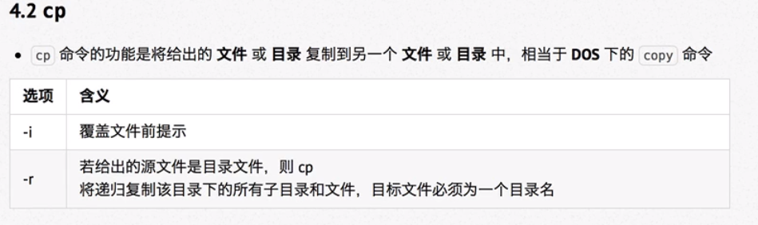
cat:
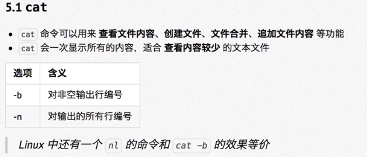
more:
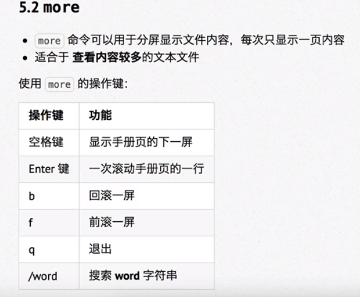
grep:

example: grep word document
ls -l 扩展

二.linux其他命令
echo:(常与重定向结合使用)

重定向:

>或>>后的文件不存在时会自动创建该文件
example: echo hello python >b (b文件夹不存在时还可自动创建)
echo hello linux >>b(在b文件中追加输入hello linux)
ls >>b(将结果输入到b文件中)
管道|:
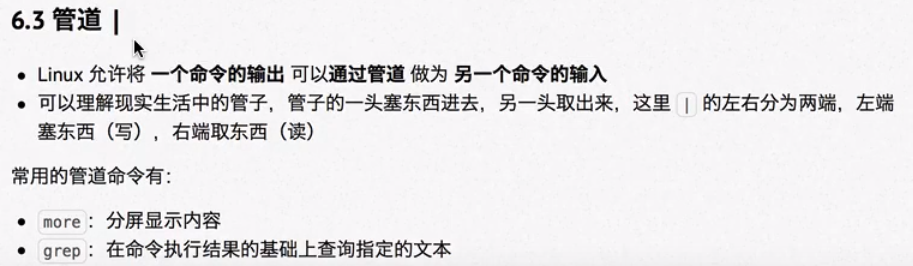
example: ls 123.txt|grep -n ^a
sudo
[sudo command 以超级用户的身份执行命令]
chsh
用于修改系统的shell
chsh -s (shell目录)
查看当前系统的shell
echo $SHELL
三.linux远程管理命令
shutdown(关机和重启)

 常用命令示例:
常用命令示例:
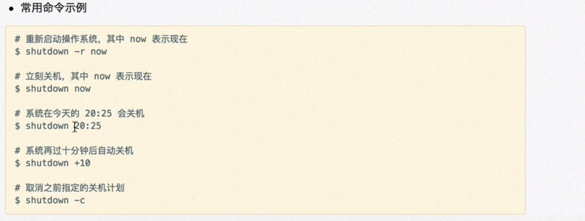
ifconfig

ping
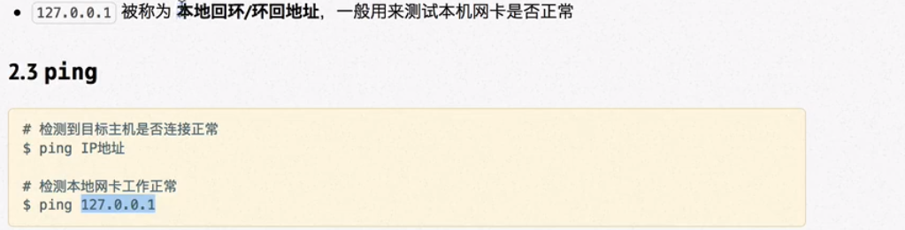
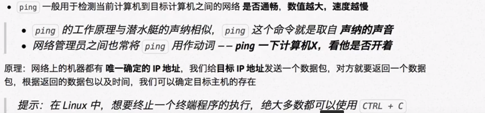
ssh客户端的简单使用

scp

FileZilla
windows与服务器传输文件的图形化软件
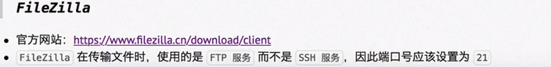
免密码登录服务器

配置别名
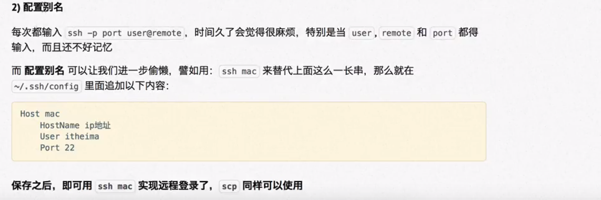
chmod简单使用

组管理的终端命令

用户管理的终端命令

查看用户信息
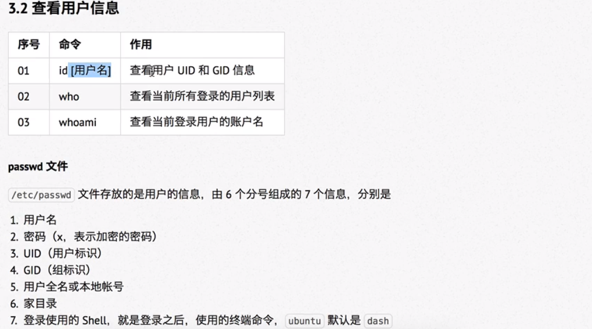
usermod
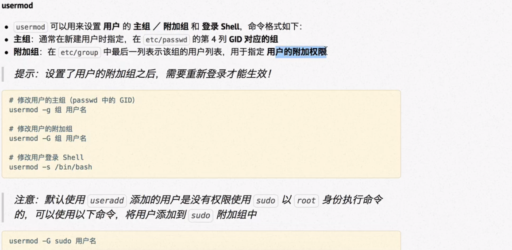
which
查看执行命令所在位置
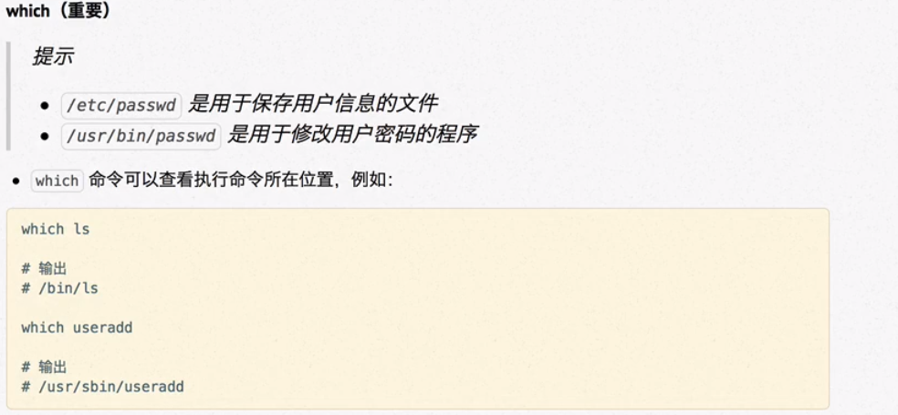
bin和sbin
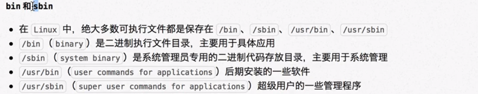
切换账户

修改文件权限
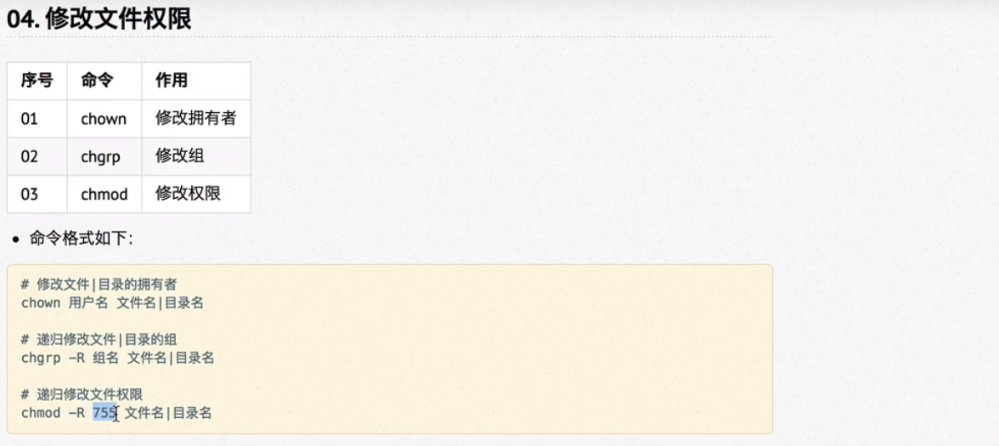
用数字代替权限
用chmod修改权限时可用数字代替

四.系统信息
时间和日期(date,cal)

磁盘信息

-h选项
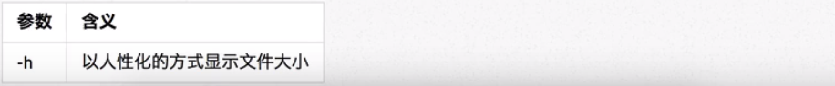
##### 进程信息

ps的选项说明

输入q退出top
kill使用时的注意事项

find(查找文件)
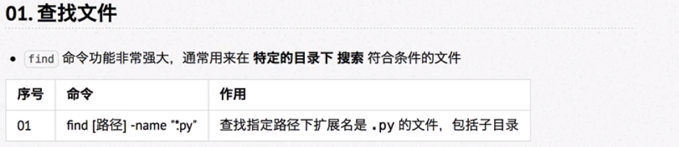
example

ln(软链接)
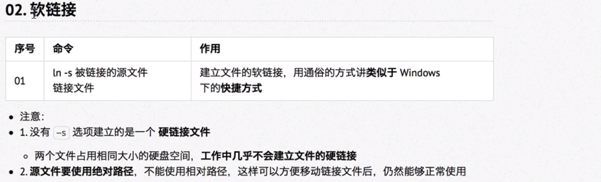
tar(打包文件)
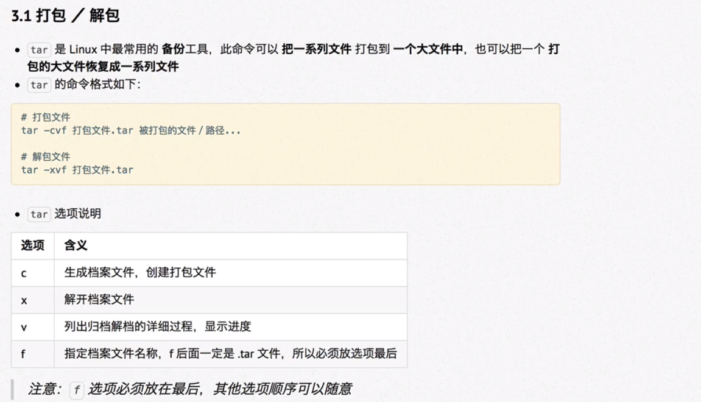
压缩文件
gzip压缩
.png)
bzip2压缩

apt(安装软件)
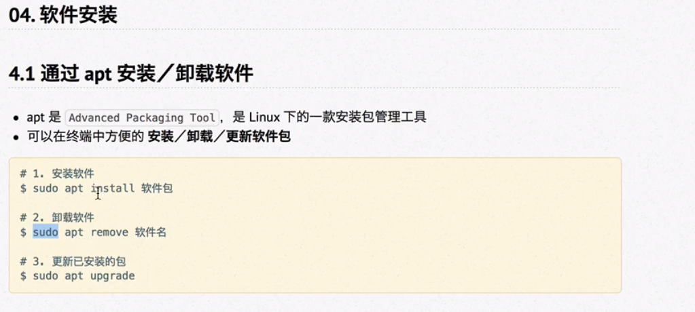